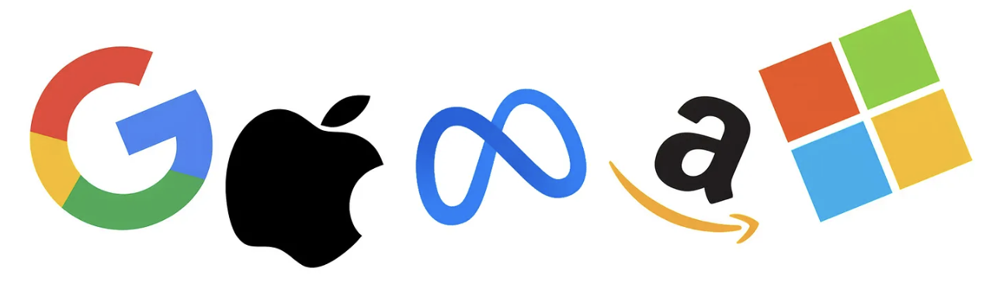

Big Tech Isn't Telling You the Whole Story

Here's where it gets frustrating. Researcher De Vries-Gao (2025) reviewed the corporate sustainability reports of major AI companies - including Google, Microsoft, Meta, and Amazon - and found that not a single one separates AI workloads from regular computing in their environmental disclosures. That distinction matters enormously because AI tasks are dramatically more energy intensive than conventional ones.
When De Vries-Gao cross-referenced Meta's own figures with IEA estimates, he found that indirect water consumption at data centers may be three to four times higher than official estimates suggest. When he flagged this, Google declined to report indirect water use in its Gemini environmental report, saying it doesn't fully control water use at power plants.
That reasoning doesn't hold up. The Greenhouse Gas Protocol already requires companies to report indirect CO2, so water should be no different. The pattern here isn't a technical limitation - companies are making this choice.